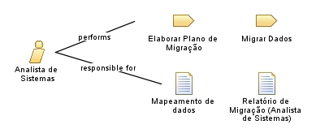

| Role: Analista de Sistemas |
 |
|
Relationships
 |
||
| Primary Performs | ||
|---|---|---|
| Additionally Performs | ||
| Modifies |
|
|
| Process Usage | ||
Main Description
| O Analista de Sistema é o profissional responsável por analisar os fluxos do sistema, realizar correções e adequações no código-fonte, bem como realizar a migração dos dados. Este papel está alocado principalmente na DDS, embora, quando necessário, analistas de sistemas vinculados à DS também possam ser acionados para apoiar nas atividades. |
Staffing
| Skills | Análise de sistemas; Programação/Desenvolvimento de software; Correção de bugs; Adaptação de código; Migração de dados; Conhecimento em banco de dados. |
|---|